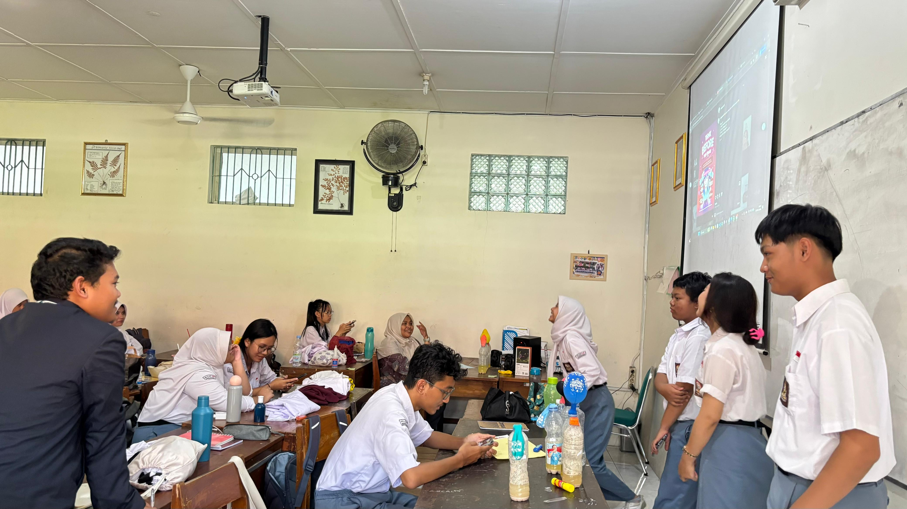

Video Praktik Pembelajaran Siklus 1
Dokumentasi audio-visual pelaksanaan pembelajaran terbimbing berdurasi penuh di Lab Komputer SMAN 4 Yogyakarta:

Praktik Pembelajaran Berpikir Komputasional di Laboratorium Komputer
Guru Model: Nur Isnanto Nugroho, S.Pd. • Dosen: Dr. Nuryake Fajaryati, S.Pd.T., M.Pd. • Pamong: Titis Widowati, S.T.
Doa, presensi, dan jajak pendapat analogi mi instan & antrean via Mentimeter.
Orientasi masalah antrean kantin menggunakan slide Canva interaktif.
Siswa berkolaborasi 4 orang membedah tabel kanvas 4 pilar CT.
Verifikasi hasil, penguatan guru model, dan kuis formatif Bebras.
Artefak Pendukung Pembelajaran
Klik tab di bawah untuk melihat rincian dokumen kurikulum dan gunakan tombol View PDF untuk pratinjau langsung:
Modul Ajar Siklus 1: Berpikir Komputasional (4 Pilar CT)
Desain rencana pembelajaran mendalam berbasis Experiential Learning (Siklus Kolb) untuk mengasah nalar kritis transisi fase E.
Evaluasi & Refleksi Siklus 1 (LK 4.1)
Dokumentasi utuh evaluasi diri dan refleksi pelaksanaan praktik pembelajaran mandiri Siklus 1, dilengkapi tinjauan berkas PDF asli, capaian kuantitatif, serta rencana perbaikan.
Refleksi Ke : Satu (Siklus 1)
1. Bagaimana kegiatan apersepsi dapat membantu murid memahami tujuan pembelajaran yang akan dicapai?
Kegiatan apersepsi dilakukan dengan mengaitkan materi Informatika dengan aktivitas yang dekat dengan kehidupan sehari-hari, seperti proses pembuatan mi untuk menjelaskan konsep algoritma dan pentingnya urutan langkah dalam menyelesaikan suatu pekerjaan. Melalui contoh tersebut, peserta didik dapat memahami bahwa konsep berpikir komputasional sebenarnya sering dijumpai dalam kehidupan sehari-hari. Menurut saya, penggunaan contoh konkret dapat membantu peserta didik memahami materi sebelum masuk ke pembahasan yang lebih mendalam. Namun, karena waktu pembelajaran pada siklus pertama cukup terbatas, kegiatan apersepsi perlu diikuti dengan penjelasan dan latihan yang cukup agar pemahaman peserta didik terhadap materi dapat berkembang dengan baik.
2. Kegiatan apa saja yang berhasil dan belum berhasil dilaksanakan dalam kegiatan inti?
Pada siklus pertama, materi yang diajarkan meliputi Berpikir Komputasional, khususnya algoritma, serta Struktur Data dan Algoritma Standar. Pembelajaran yang seharusnya dilaksanakan dalam empat pertemuan mengalami kendala karena dua pertemuan tidak terlaksana akibat adanya kegiatan sekolah, seperti peringatan 17 Agustus dan Maulid Nabi. Selain itu, pada pertemuan pertama pembelajaran masih diisi oleh guru pamong karena awalnya praktik direncanakan untuk kelas XII, kemudian pada minggu berikutnya dialihkan ke kelas X. Akibatnya, materi yang belum tersampaikan harus dikejar dalam waktu yang terbatas. Kegiatan praktik di depan kelas tetap dilakukan, tetapi hanya diikuti oleh peserta didik yang bersedia maju secara sukarela. Sementara itu, pengerjaan LKPD belum dapat dilaksanakan sesuai rencana dan dialihkan menjadi pekerjaan rumah. Dengan kondisi tersebut, kegiatan inti belum berjalan secara optimal karena waktu untuk praktik, diskusi, dan pendalaman materi menjadi terbatas.
3. Seberapa efektif penggunaan media pembelajaran untuk melibatkan partisipasi aktif di kelas?
Penggunaan media pembelajaran belum sepenuhnya efektif dalam mendorong partisipasi aktif seluruh peserta didik. Keterbatasan waktu membuat pembelajaran lebih berfokus pada penyampaian materi, sehingga kesempatan untuk mengeksplorasi media dan melakukan praktik secara langsung menjadi terbatas. Hal ini terlihat ketika praktik di depan kelas hanya diikuti oleh beberapa peserta didik yang bersedia maju secara sukarela. Dari pengalaman tersebut, saya menyadari bahwa penggunaan media perlu disertai kegiatan yang melibatkan seluruh peserta didik agar mereka tidak hanya menerima penjelasan, tetapi juga memperoleh kesempatan untuk mencoba dan memahami materi secara langsung.
4. Bagaimana reaksi/respon murid dalam setiap kegiatan dari pembukaan hingga penutupan pembelajaran?
Respons peserta didik selama pembelajaran cukup beragam. Pada kegiatan pembukaan, contoh yang dekat dengan kehidupan sehari-hari digunakan untuk membantu peserta didik memahami materi yang akan dipelajari. Namun, ketika masuk ke kegiatan inti, masih terdapat peserta didik yang belum terlibat secara aktif, terutama dalam kegiatan praktik di depan kelas. Selain itu, beberapa materi yang disampaikan belum langsung dipahami oleh peserta didik sehingga perlu dijelaskan kembali menggunakan bahasa yang lebih sederhana atau contoh tambahan. Kondisi ini membuat saya menyadari bahwa penyampaian materi perlu disesuaikan dengan pemahaman peserta didik dan kegiatan pembelajaran perlu memberikan kesempatan yang lebih luas bagi mereka untuk berpartisipasi.
1. Apakah umpan balik dari Guru Pamong untuk praktik pembelajaran mandiri yang lebih baik?
Selama pelaksanaan PPL, pembahasan bersama guru pamong lebih banyak berkaitan dengan materi yang akan diajarkan. Oleh karena itu, saya masih perlu melakukan evaluasi secara mandiri terhadap pelaksanaan pembelajaran, terutama dalam menyesuaikan penyampaian materi dengan kondisi peserta didik dan waktu yang tersedia. Pengalaman pada siklus pertama memberikan pemahaman kepada saya bahwa rancangan pembelajaran perlu disiapkan dengan mempertimbangkan kemungkinan perubahan jadwal agar tujuan pembelajaran tetap dapat dicapai secara optimal.
2. Apabila Anda akan melakukan perubahan terhadap metode pembelajaran, unsur apa yang akan Anda ubah untuk metode pembelajaran yang lebih baik?
Apabila menghadapi kondisi serupa, saya akan lebih memperhatikan prioritas materi, alokasi waktu, dan kegiatan yang dapat melibatkan seluruh peserta didik. Saya juga akan memberikan lebih banyak contoh konkret yang dekat dengan kehidupan sehari-hari, menyampaikan materi secara bertahap, serta menyediakan latihan singkat untuk mengetahui pemahaman peserta didik sebelum melanjutkan ke materi berikutnya. Selain itu, saya akan menyiapkan alternatif kegiatan apabila waktu pembelajaran berubah, tanpa menghilangkan kesempatan peserta didik untuk melakukan praktik secara langsung. Dengan demikian, pembelajaran tidak hanya berfokus pada penyelesaian materi, tetapi juga pada pemahaman dan keterlibatan peserta didik selama proses pembelajaran.
1. Kekuatan Pembelajaran
Pemberian analogi nyata antrean kantin sekolah terbukti sangat efektif memecah keengganan siswa kelas X yang sedang dalam fase transisi. Interaksi polling Mentimeter memicu 100% siswa merespon secara aktif pada 10 menit pertama.
2. Kendala / Tantangan
Pada pilar Abstraksi, 12 siswa (11.1%) masih kesulitan membedakan antara informasi esensial dan data pengganggu. Akibatnya, alur algoritma awal yang disusun sempat terlalu panjang dan kurang efisien.
3. Rencana Tindak Lanjut
Pada Siklus 2 (Algoritma & Flowchart), guru merancang guided scaffolding berupa lembar pemandu kata kunci logika untuk menyeleksi variabel sebelum siswa menuangkan ide ke diagram alir resmi ISO.
Dokumentasi Kegiatan Siklus 1
Rekaman visual suasana pembelajaran, interaksi peserta didik, dan pendampingan di Lab Komputer SMAN 4 Yogyakarta:
Apersepsi & Polling Kelas
Guru memandu jajak pendapat logika komputasional Mentimeter di depan laboratorium komputer.

Kolaborasi LKPD 4 Pilar
Siswa Fase E berdiskusi memecahkan skenario antrean kantin dengan kanvas Dekomposisi & Pola.

Presentasi Solusi Logika
Perwakilan kelompok mempresentasikan rumusan algoritma alur prioritas di hadapan rekan sekelas.

Asesmen Mandiri & Refleksi
Pengerjaan tes formatif berbasis soal tantangan Bebras untuk mengukur ketercapaian nalar kritis.